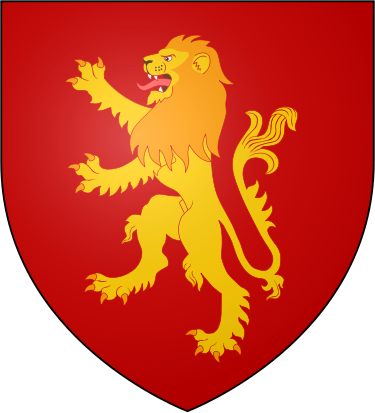
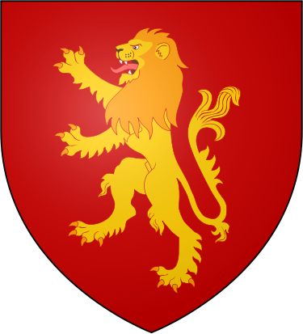
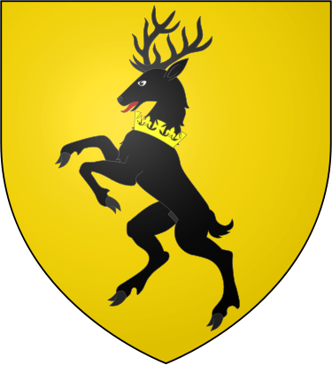
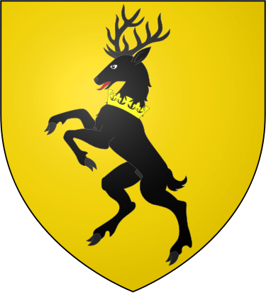

 

На момент серіалу відомий світ складається з трьох континентів: Вестеросу, Ессосу та Соторосу. Так
само, відкриті безліч островів і архіпелагів, наприклад, архіпелаг Щаблі, Літні острови, острів
Іббен.